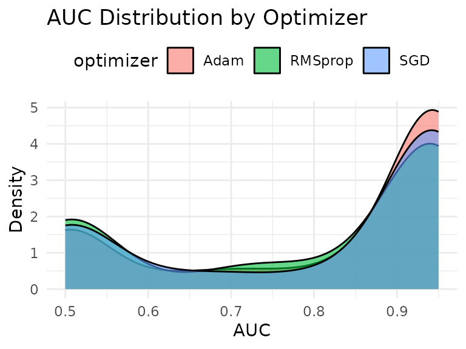
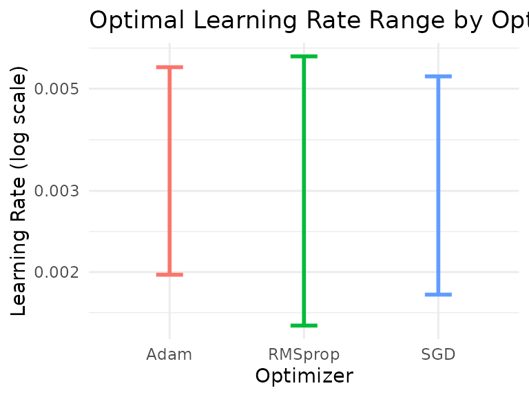
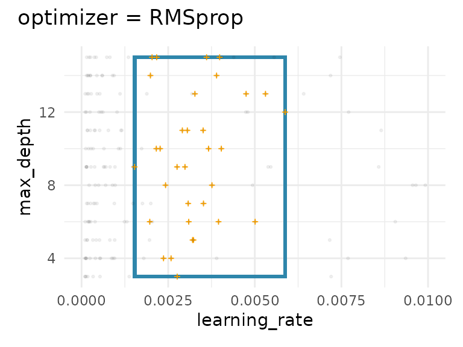
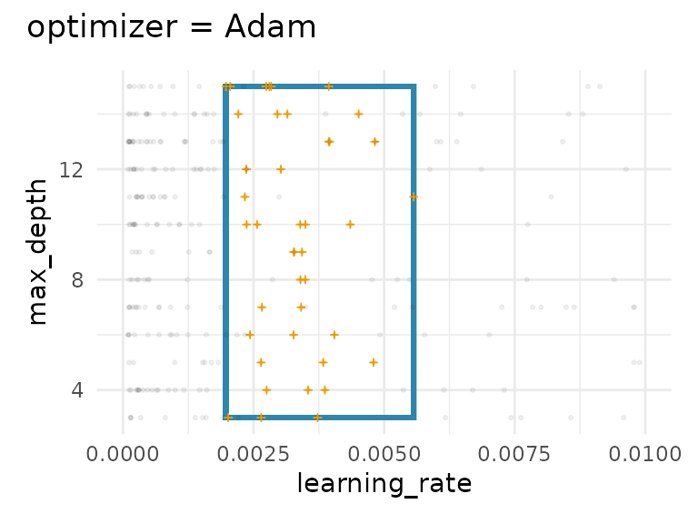
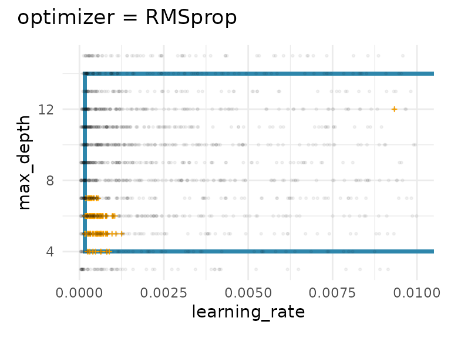
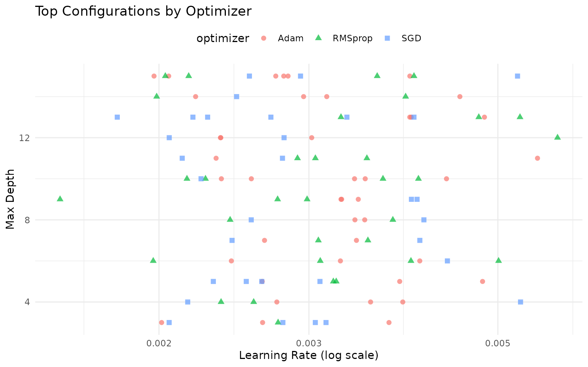

Working with Categorical Hyperparameters
categorical-hyperparameters.Rmd
library(spacefinder)
library(data.table)
library(ggplot2)
data(benchmark_data)Introduction
Many hyperparameter optimization scenarios involve categorical
hyperparameters like optimizer type, activation function, or kernel
choice. The spacefinder package handles these by fitting
separate subspaces for each categorical level.
The Data
The benchmark_data includes three optimizers: SGD, Adam,
and RMSprop. Let’s explore how they differ:
# Performance by optimizer
benchmark_data[, .(
mean_auc = mean(auc),
median_auc = median(auc),
sd_auc = sd(auc),
max_auc = max(auc),
n = .N
), by = optimizer]
#> optimizer mean_auc median_auc sd_auc max_auc n
#> <char> <num> <num> <num> <num> <int>
#> 1: RMSprop 0.7916034 0.9097144 0.1883038 0.9499907 301
#> 2: Adam 0.8185814 0.9380809 0.1789091 0.9499937 399
#> 3: SGD 0.8043445 0.9356146 0.1882794 0.9499810 300
# Visualize distributions
ggplot(benchmark_data, aes(x = auc, fill = optimizer)) +
geom_density(alpha = 0.6) +
theme_minimal() +
labs(title = "AUC Distribution by Optimizer",
x = "AUC", y = "Density") +
theme(legend.position = "top")
Notice that Adam tends to achieve slightly higher performance than SGD and RMSprop.
Creating a Task with Categorical Hyperparameters
Include the categorical hyperparameter in the task definition:
# Explicit specification
task <- TaskSubspace$new(
data = benchmark_data,
target_measure = "auc",
hps = c("learning_rate", "max_depth"),
cat_hps = "optimizer"
)
# Formula interface and convenience function
task <- as_task_subspace(
data = benchmark_data,
formula = auc ~ (learning_rate + max_depth) * optimizer
)The * optimizer in the formula indicates that separate
subspaces should be fitted for each optimizer type.
Fitting Separate Subspaces
Train a learner - it will automatically fit one subspace per optimizer:
learner <- LearnerSubspaceBox$new(task)
learner$train(q_val = 0.9)Examining Results per Category
Coefficients
The coefficients now show separate bounds for each optimizer:
bounds <- coef(learner)
print(bounds)
#> optimizer hyperparameter min max
#> <char> <char> <num> <num>
#> 1: RMSprop learning_rate 0.001530802 0.005875366
#> 2: RMSprop max_depth 3.000000000 15.000000000
#> 3: Adam learning_rate 0.001973576 0.005565649
#> 4: Adam max_depth 3.000000000 15.000000000
#> 5: SGD learning_rate 0.001786868 0.005316169
#> 6: SGD max_depth 3.000000000 15.000000000Notice how different optimizers have different optimal ranges!
# Compare learning rate ranges
bounds[hyperparameter == "learning_rate"] |>
ggplot(aes(optimizer, color = optimizer)) +
geom_errorbar(aes(ymin = min, ymax = max), width = 0.2, linewidth = 1) +
scale_y_log10() +
theme_minimal() +
labs(title = "Optimal Learning Rate Range by Optimizer",
y = "Learning Rate (log scale)", x = "Optimizer") +
theme(legend.position = "none")
Summary
The summary shows fitting statistics for each optimizer:
summary(learner)
#> SUMMARY
#> --------------------------------------------------
#> Property Value
#> ---------------------------- -------------------------
#> Target Measure auc
#> Numeric Hyperparameters learning_rate, max_depth
#> Categorical Hyperparameters optimizer
#>
#>
#> COEFFICIENTS
#> --------------------------------------------------
#> optimizer hyperparameter min max
#> ---------- --------------- ---------- -----------
#> RMSprop learning_rate 0.0015308 0.0058754
#> RMSprop max_depth 3.0000000 15.0000000
#> Adam learning_rate 0.0019736 0.0055656
#> Adam max_depth 3.0000000 15.0000000
#> SGD learning_rate 0.0017869 0.0053162
#> SGD max_depth 3.0000000 15.0000000
#>
#>
#> STATUS
#> --------------------------------------------------
#> optimizer status objective_value n_violations observations
#> ---------- ------- ---------------- ------------- -------------
#> RMSprop NULL NULL NULL 33
#> Adam NULL NULL NULL 42
#> SGD NULL NULL NULL 32Each optimizer gets its own row in the status table, showing: - Number of observations used - Performance across tasks
Visualization
The autoplot function creates separate visualizations for each optimizer:
lapply(autoplot(learner), \(plot) plot + scale_x_continuous(limits = c(0, .01)))
#> $RMSprop
#>
#> $Adam
#>
#> $SGD
Each panel shows: - The fitted subspace for that optimizer - Top configurations for that optimizer (orange crosses) - All configurations for that optimizer (gray points)
Comparing Optimizers
Let’s analyze the differences between optimizers:
# Extract top configs per optimizer
top_configs_summary <- learner$top_configs[, .(
mean_lr = mean(learning_rate),
median_lr = median(learning_rate),
mean_depth = mean(max_depth),
median_depth = median(max_depth),
mean_auc = mean(auc),
n = .N
), by = optimizer]
print(top_configs_summary)
#> optimizer mean_lr median_lr mean_depth median_depth mean_auc n
#> <char> <num> <num> <num> <num> <num> <int>
#> 1: RMSprop 0.003233532 0.003093437 9.515152 10 0.9499607 33
#> 2: Adam 0.003243376 0.003269311 9.619048 10 0.9499767 42
#> 3: SGD 0.003003816 0.002749956 8.968750 9 0.9499650 32
# Scatter plot colored by optimizer
ggplot(learner$top_configs, aes(x = learning_rate, y = max_depth,
color = optimizer, shape = optimizer)) +
geom_point(size = 2, alpha = 0.7) +
scale_x_log10() +
theme_minimal() +
labs(title = "Top Configurations by Optimizer",
x = "Learning Rate (log scale)", y = "Max Depth") +
theme(legend.position = "top")
Next Steps
-
vignette("learner-comparison"): Compare Box, Polygon, and Ellipsoid learners -
vignette("density-estimation"): Add probabilistic density withaugment()
sessionInfo()
#> R version 4.5.2 (2025-10-31)
#> Platform: x86_64-pc-linux-gnu
#> Running under: Ubuntu 24.04.3 LTS
#>
#> Matrix products: default
#> BLAS: /usr/lib/x86_64-linux-gnu/openblas-pthread/libblas.so.3
#> LAPACK: /usr/lib/x86_64-linux-gnu/openblas-pthread/libopenblasp-r0.3.26.so; LAPACK version 3.12.0
#>
#> locale:
#> [1] LC_CTYPE=C.UTF-8 LC_NUMERIC=C LC_TIME=C.UTF-8
#> [4] LC_COLLATE=C.UTF-8 LC_MONETARY=C.UTF-8 LC_MESSAGES=C.UTF-8
#> [7] LC_PAPER=C.UTF-8 LC_NAME=C LC_ADDRESS=C
#> [10] LC_TELEPHONE=C LC_MEASUREMENT=C.UTF-8 LC_IDENTIFICATION=C
#>
#> time zone: UTC
#> tzcode source: system (glibc)
#>
#> attached base packages:
#> [1] stats graphics grDevices utils datasets methods base
#>
#> other attached packages:
#> [1] ggplot2_4.0.1 data.table_1.17.8 spacefinder_0.2.1.9001
#>
#> loaded via a namespace (and not attached):
#> [1] Matrix_1.7-4 bit_4.6.0 gtable_0.3.6 jsonlite_2.0.0
#> [5] Rmpfr_1.1-2 compiler_4.5.2 Rcpp_1.1.0 jquerylib_0.1.4
#> [9] systemfonts_1.3.1 scales_1.4.0 textshaping_1.0.4 yaml_2.3.12
#> [13] fastmap_1.2.0 lattice_0.22-7 R6_2.6.1 patchwork_1.3.2
#> [17] labeling_0.4.3 generics_0.1.4 knitr_1.50 backports_1.5.0
#> [21] checkmate_2.3.3 desc_1.4.3 bslib_0.9.0 RColorBrewer_1.1-3
#> [25] rlang_1.1.6 cachem_1.1.0 CVXR_1.0-15 xfun_0.54
#> [29] S7_0.2.1 fs_1.6.6 sass_0.4.10 bit64_4.6.0-1
#> [33] cli_3.6.5 withr_3.0.2 pkgdown_2.2.0 digest_0.6.39
#> [37] grid_4.5.2 gmp_0.7-5 lifecycle_1.0.4 vctrs_0.6.5
#> [41] evaluate_1.0.5 glue_1.8.0 farver_2.1.2 ragg_1.5.0
#> [45] rmarkdown_2.30 tools_4.5.2 htmltools_0.5.9